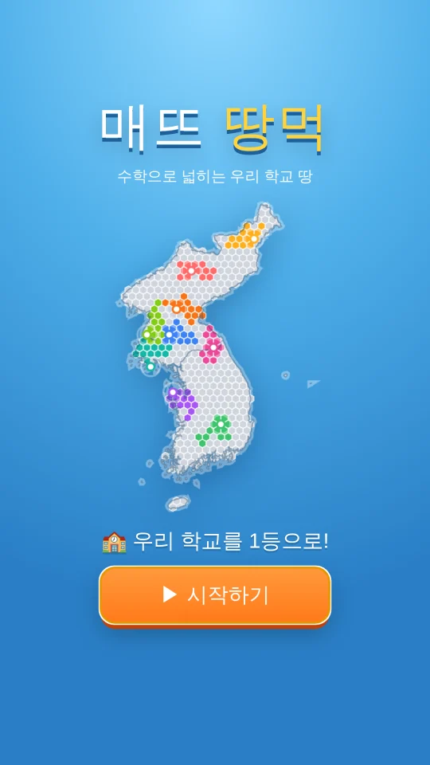
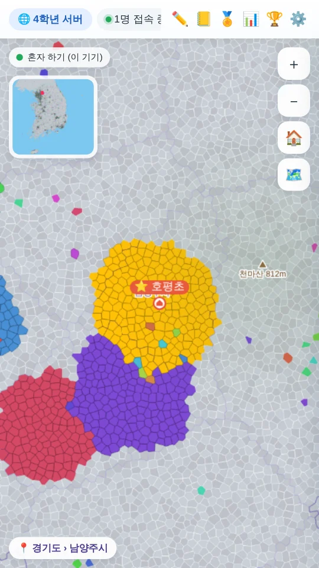
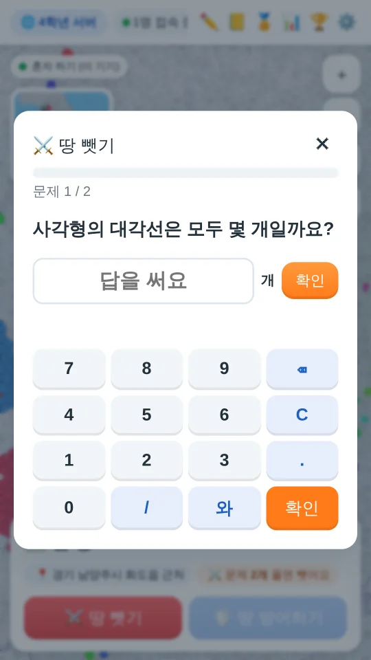
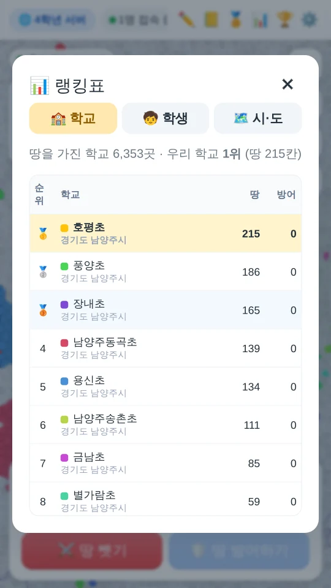

진짜 한반도 지도 위에서 펼쳐지는 초등학교 땅따먹기
출생연도로 학년이 정해지고, 학년·학기에 맞는 덧셈부터 분수·소수·도형까지 나와요.
전국 초등학교 6,300여 곳이 실제 위치에 있고, 땅은 160만 칸이 넘어요.
닿은 땅은 문제 2개로 차지! 4학년부터는 멀리 있는 땅도 문제 50개로 뺏어요.
모르는 문제는 힌트를 보고, 틀린 문제는 오답 노트에 모아 다시 풀어요.
학교·학생·시도 순위와 연속 정답 불꽃, 출석 배지로 실력을 뽐내요.
광고가 없고, 채팅은 정해진 문장만 쓸 수 있어요.
1분이면 시작할 수 있어요
옆으로 넘겨 보세요




궁금한 점을 눌러 보세요
아니요. 모두 무료이고 광고도 없어요.
초등학교 1학년부터 6학년까지 할 수 있어요. 출생연도로 학년이 정해지고, 그 학년에 맞는 문제가 나와요.
지금 쓰는 기기(브라우저) 안에만 저장돼요. 서버로 보내지 않아서, 다른 기기에서는 처음부터 시작해요. 브라우저 기록을 지우면 게임 기록도 지워져요.
이 사이트에서는 한 기기에서 혼자 하는 방식이에요. 같은 기기에서 친구가 따로 가입해서 우리 학교 땅을 함께 넓힐 수 있어요.
160만 칸이 넘는 진짜 지도를 받기 때문이에요. 한 번 받으면 기기에 저장돼서 다음부터는 빨리 열리고, 인터넷이 끊겨도 열려요.